ホームバーで操作
iPhoneのホームバーと同じ操作で、直感的にMacを操作できます。
Mios
Mios = Mac + iOS
企画・要件定義・設計・検証：大井田浩志 ／ 実装：生成AI
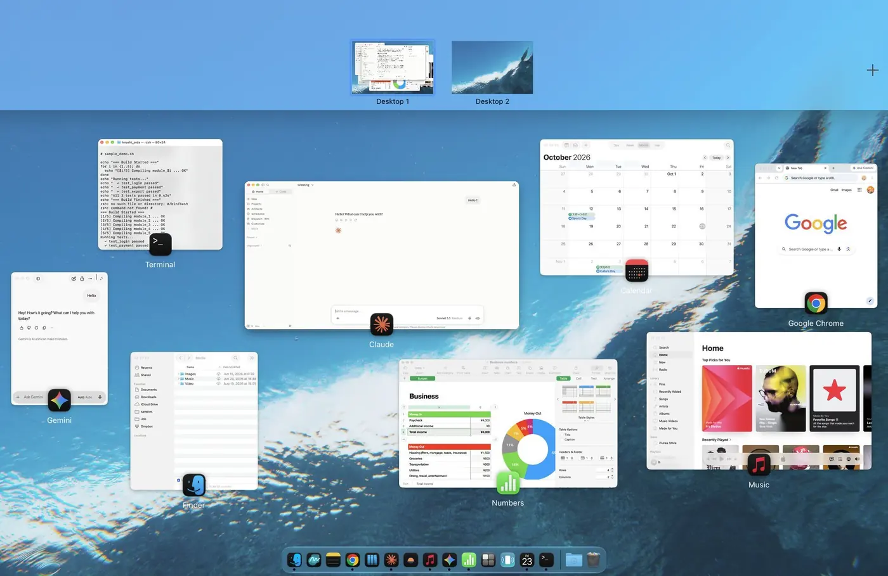
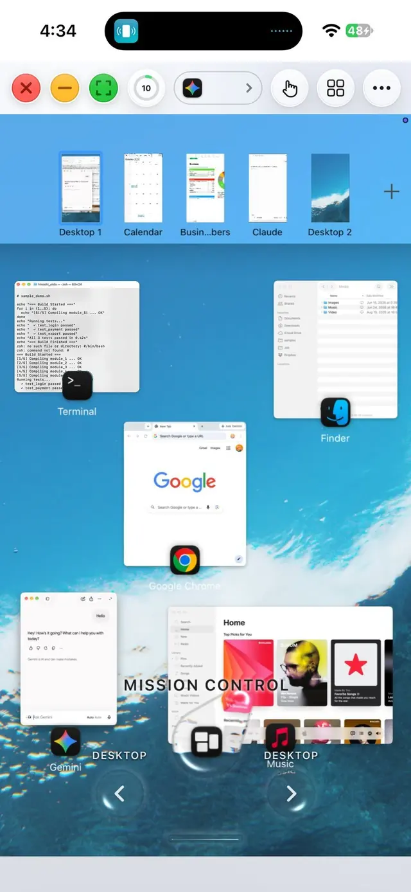
MacをiPhoneから操作するアプリです。画面を映すだけでなく、ホームバーやタップなど、操作そのものをiPhoneの感覚に置き換えます。
私自身が毎日使いながら、生成AIを活用して改良中・一般公開は準備中
Mac:Miosを起動するだけ / iPhone:リンクを開いてPINを入れるだけ
要件と仕様、デザインの調整、検証まで私が担当し、コードはAIが書いています。2026年4月に試作を始め、10月にSwift版へ移行しました。開発の歩みを見る ›
動画
実際にiPhoneで操作した画面収録を、短く編集しました。
なぜ作ったか
一般的なリモート操作アプリは、Macの横長の画面を、そのままiPhoneに表示します。
Miosは、画面をiPhoneの形に合わせ、触り方ごとiPhoneに置き換えます。
ボタンは指で押せる大きさに。切り替えはいつものスワイプで。新しく覚えることは、ほとんどありません。
ピクニックに出ていても、
家のMacにそのまま繋がっている。
作りたかったのは、その感覚です。
生成AIを活用した開発では、以下のことに注力しておりました。
「リモートデスクトップと同じ手間で、よりiPhoneらしく使える」ことを目標に置き、それを実現するためのアイディアをひたすら出し続けました。
毎日実機で使い、気づいた不具合や不足を次の改良につなげてきました。特にホームバーの操作感や、グラフィック面は何度も実際に触りながら改良しました。改版は試作版とSwift版を合わせて160回を超えています。この経験をもとに、今後はいかにダイレクトに最終盤まで到達できるか、その時間とレビュー回数を圧縮していくことが課題です。
Macは起動するだけ、iPhoneはリンクを開いてPINを入れるだけ、という手軽さを保つため、機能を増やすことより絞ることを優先しました。ボタンをなるべくUIから排除し、誰もが使いやすいデザインを目指しました。
これらのアプリ開発の経験は、今後の仕事でも活かせると考えています。
iPhoneのホームバーと同じ操作で、直感的にMacを操作できます。
小さなセルも2本指でズームして入力できます。
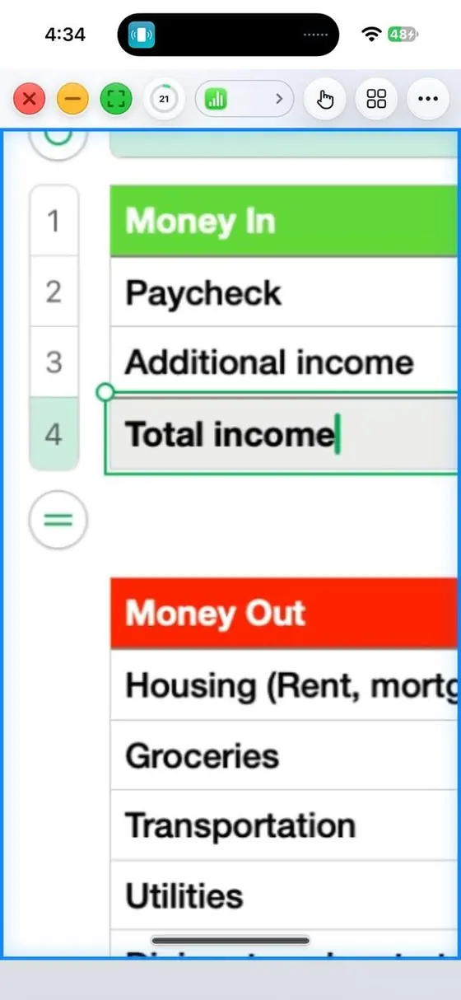
iPhoneのキーボードで打った文字が、そのままMacに入ります。日本語は、iPhoneで変換を確定してから送ります。
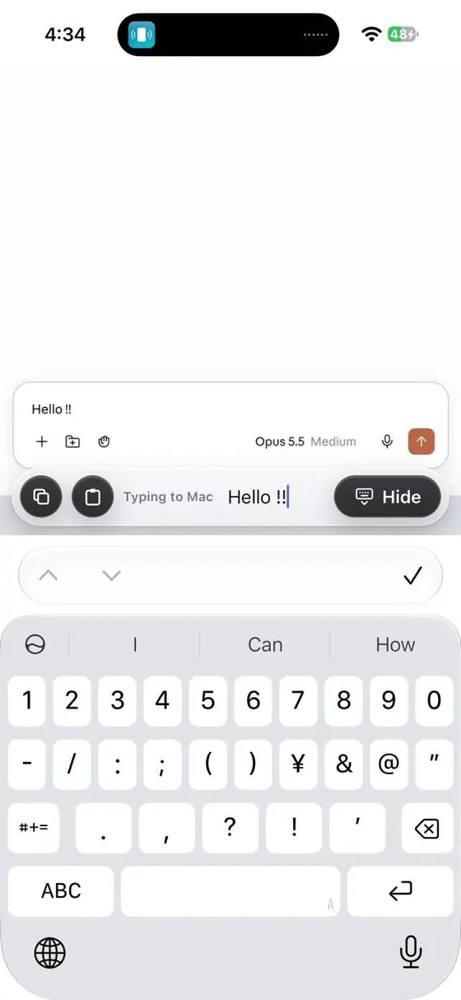
専用のDockを呼び出して、アプリを切り替えられます。
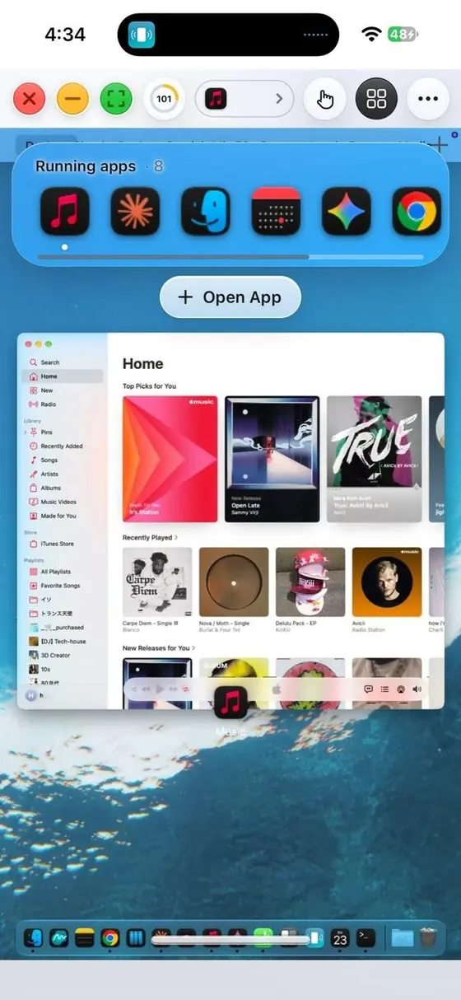
コントロールセンターとツールバーも呼び出せます。
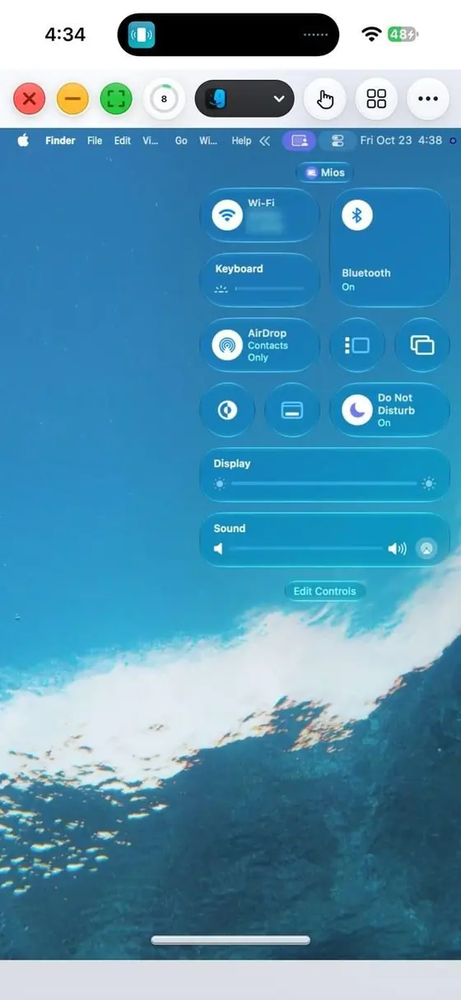
専用のアクティビティモニターでMacの状況を確認しながら、音もiPhoneに送れます。
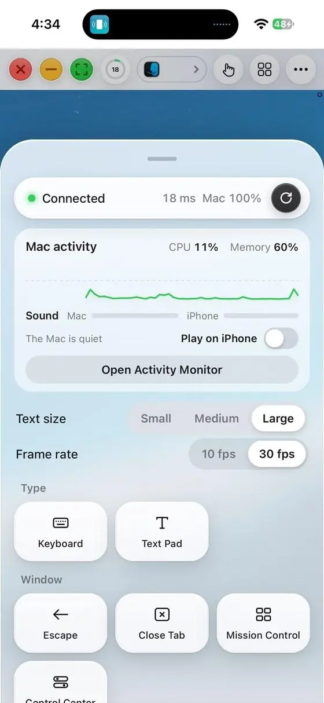
開発の歩み
開発の前に、目的・対象・要件・対象外を決め、AIへの指示はここを起点にしました。
2026年4月
Mac側はPython、iPhone側はHTMLとJavaScript。約1か月で、自分で毎日使える形にしました。
4月〜10月
使いながら見つけた不具合と不足を、一つずつ直し続けました。
2026年10月
配布を前提に、Mac側をSwiftで作り直しました。1週間で移行し、画面の送り方とUIも大きく変えています。
ホームバーをiPhoneと同じ操作にし、Mission Controlをホーム代わりにしました。
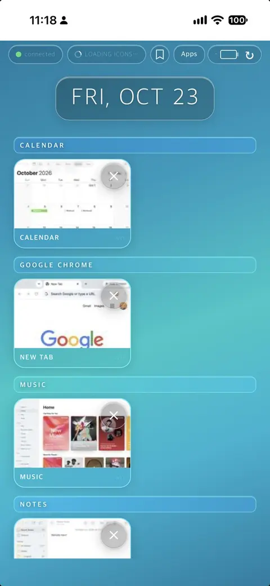
試作版
Swift版
画面上部を占めていたボタンを、Macと同じウィンドウボタンと ⋯ メニューに整理しました。
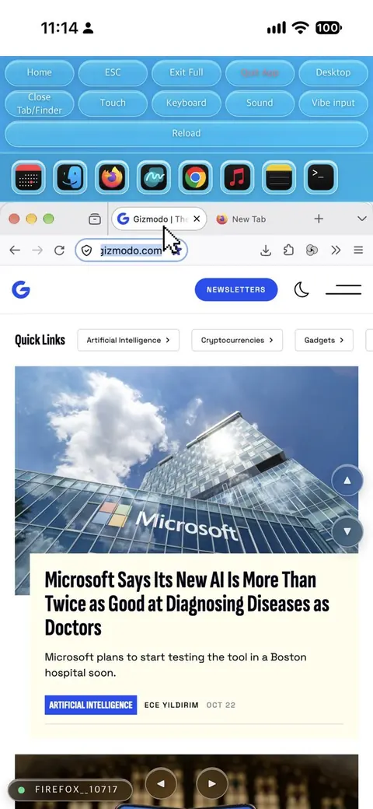
試作版
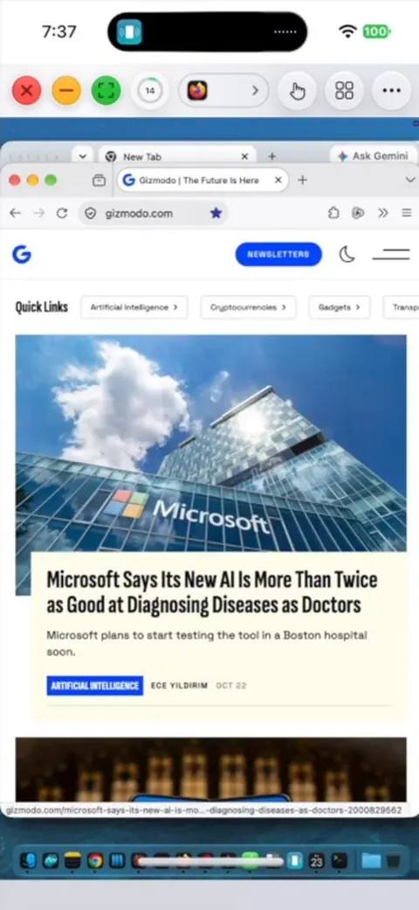
Swift版
一番苦労した部分です。試作版の記録をもとに、変換はiPhoneで済ませ、確定した文字だけを送る作りにしました。
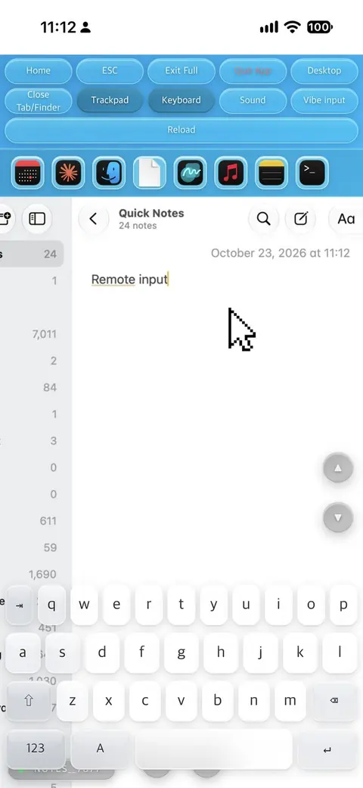
試作版
Swift版
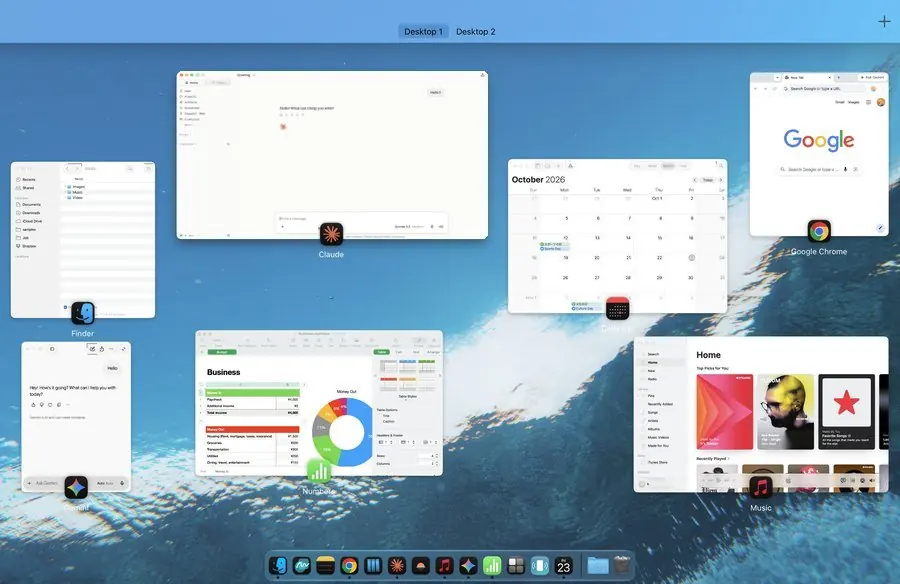
試作版 Macの画面は横長のまま、ウィンドウをiPhoneの縦横比に自動リサイズする機能を取り入れて、その範囲だけを見せていました。
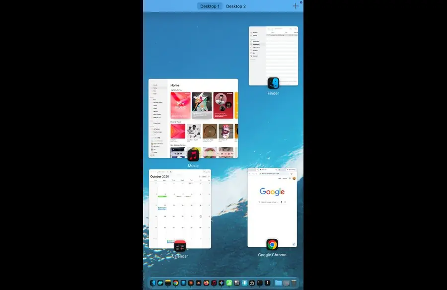
Swift版 Macの画面そのものをiPhoneと同じ縦横比にすることで、Macの自然な操作感のまま、iPhoneに画面を表示することに成功しました。
音が二重に鳴る、キーボードが入力欄を覆う、iPhoneを閉じてもMacが気づかない。直してきた不具合は、すべて日常の使用のなかで見つけたものです。
AIは会話をまたいで記憶を持てず、会話が変わるたびに担当者が入れ替わるのと同じ状態です。そこで、人のチームでPMが行う引き継ぎや変更管理を、AIとの開発にも取り入れました。
画面の見方
よく使うのは、左上の3つのボタンと、一番下のホームバーです。どちらもiPhoneと同じ感覚で、指でそのまま触れます。
操作
タップ
クリック
長押し
右クリック
1本指で上下
スクロール
ピンチ
拡大・縮小
3本指
コピー / ペースト
ホームバーを上へ
Mission Control
トラックパッドモード
ポインタだけ動かす
入力欄をタップ
iPhoneのキーボードが開き、日本語も英語もそのまま入力
つなぎ方
どれか1つでつながります。
MacとiPhoneが
同じWi‑Fi
家のネットワーク内で、直接つながります。
Tailscale
無料のTailscaleアプリをMacとiPhoneに入れ、同じアカウントでログインするだけで、外からもつながります。
自前サーバー
自分のCloudflareアカウントに中継サーバーを立てます。通信は端末間で暗号化され、サーバーは中身を見られません。
どのつなぎ方でも、最初に一度だけペアリングが必要です。Macに表示されるQRコードをiPhoneで読み取るか、6桁のコードを入力します。ペアリングしたiPhone以外は、同じネットワークにいても操作できません。
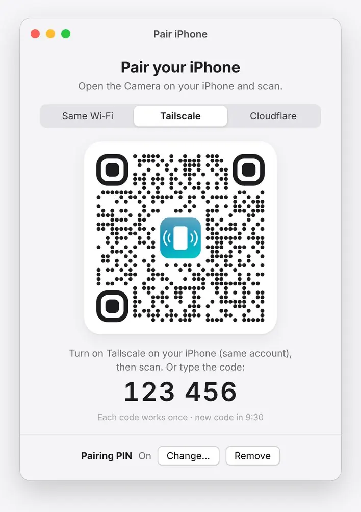
Mac側の画面
「Pair iPhone」のUI
外出先なら、速さと実績のあるTailscaleが第一候補です。自前サーバーは、iPhoneにVPNアプリを入れられない場合や、Tailscaleに依存したくない場合の選択肢です。
MacとiPhoneを同じアカウントのTailscaleでつなぐと、外出先からでも家の中と同じように直接つながります。
P2Pで直接つながらない回線では、TailscaleのDERPリレーを経由します。その場合もWireGuardで端末間暗号化されたままです。
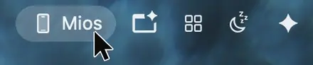
リリース準備中